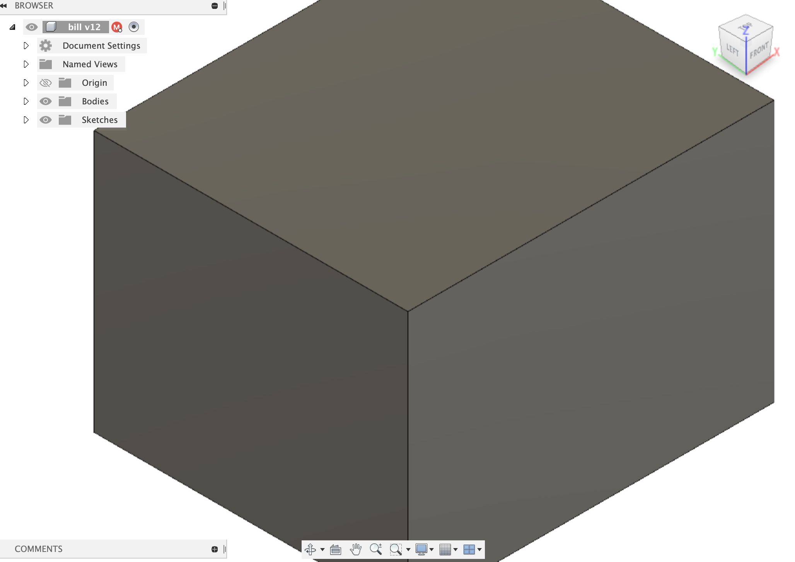
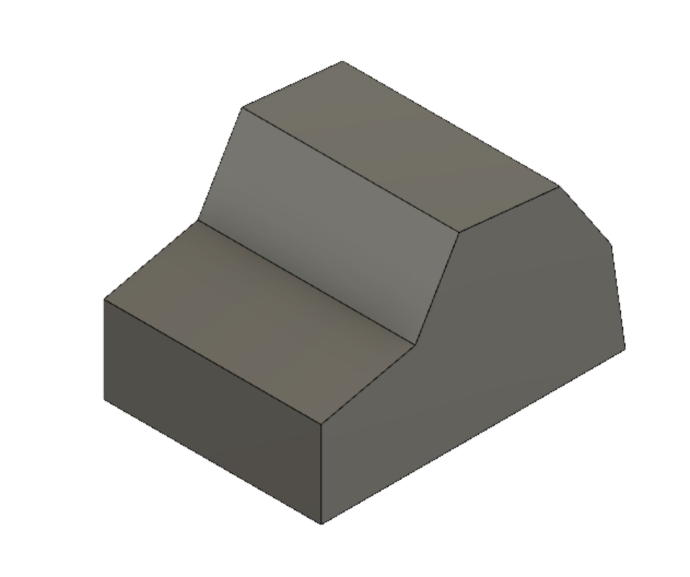
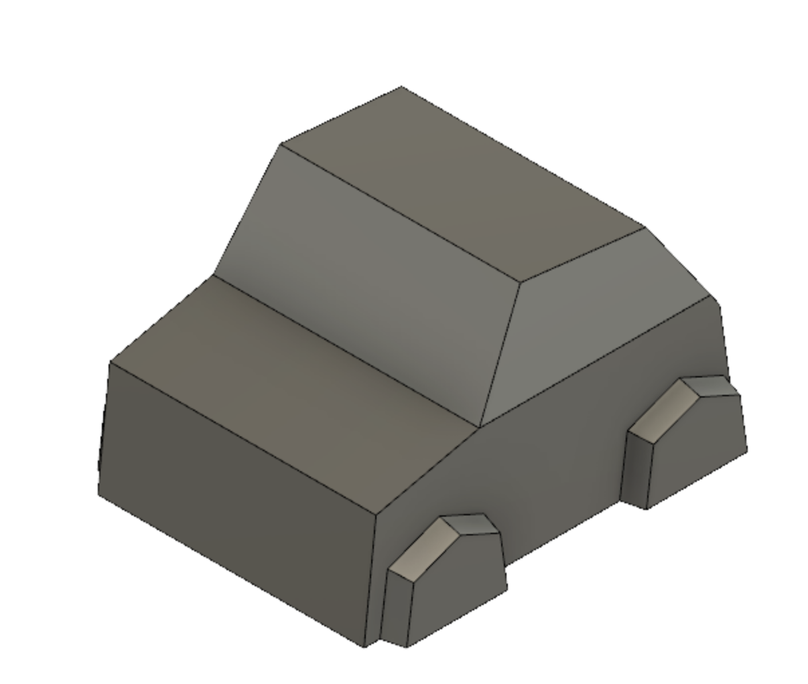
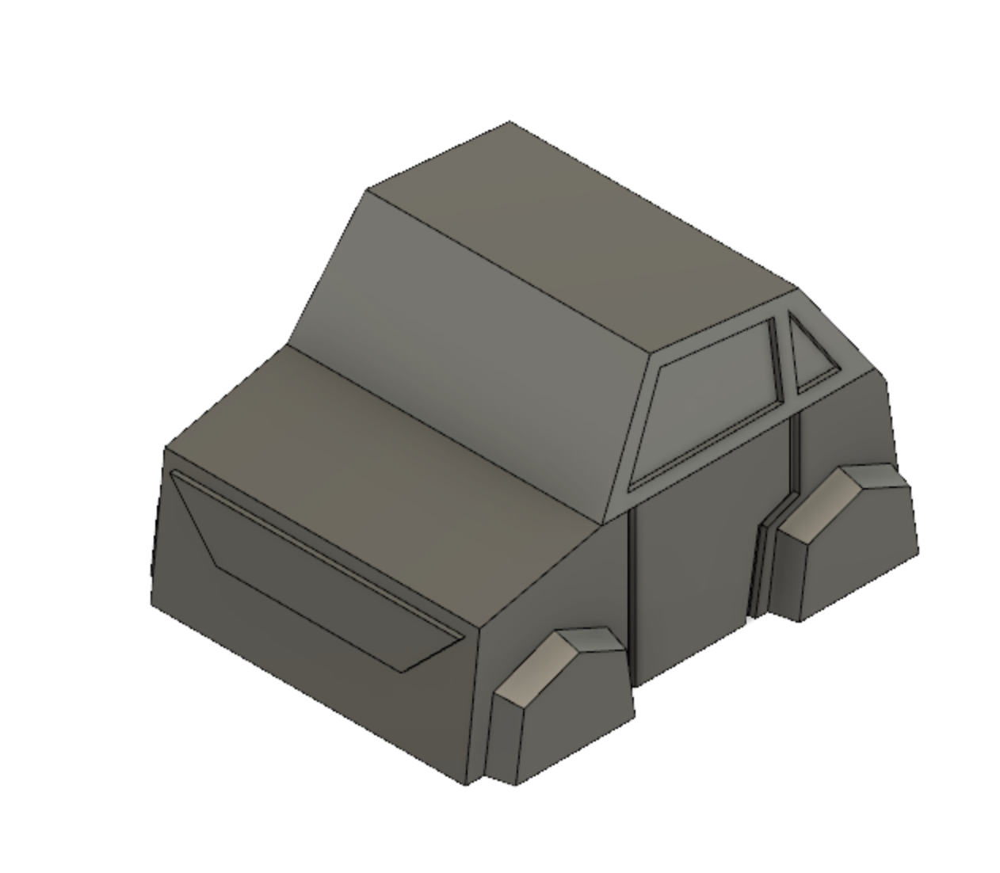
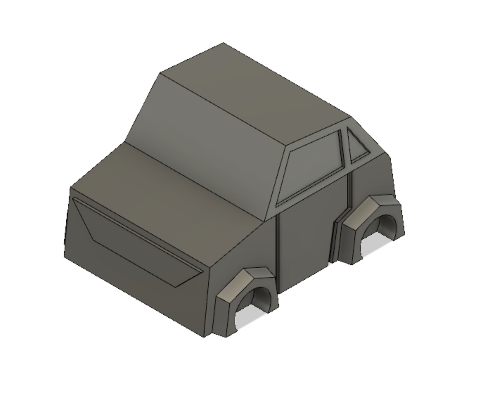
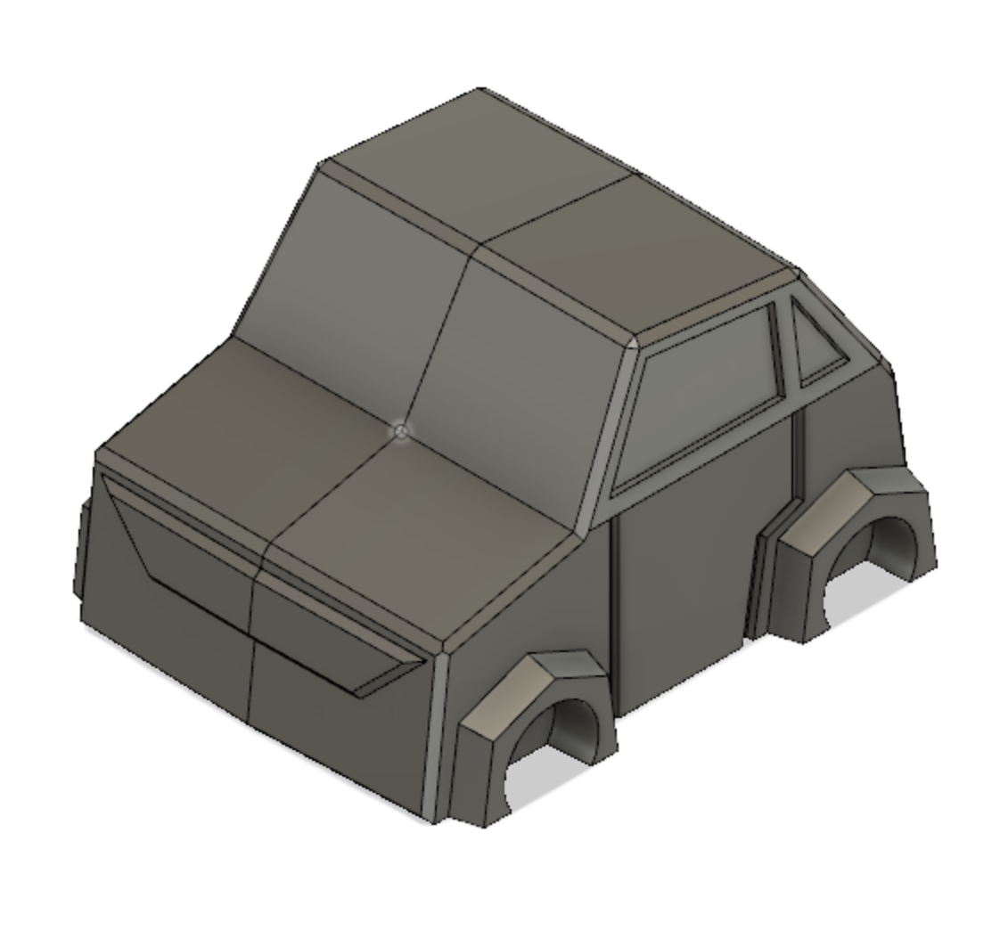
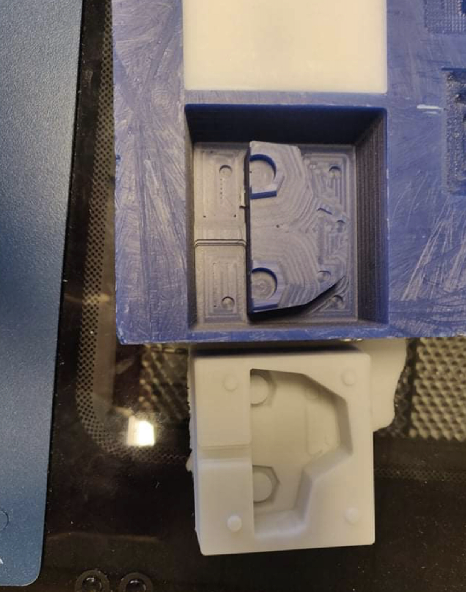

So this design was substitued for it, much simpler and rendering much of the design study unnessacary. Overhangs and everything needed to be eliminated so the car could be removed from the mold after casting so the body was made slanted and all features on the front and side were extruded.
Partur 2: fræsing
Fræsingin gekk að mestu vel, það þurfti einfaldlega að staðsetja fræsibitann í byrjun og ýta á af stað. Það var mjög ljótt hljóð í fræsinum sem kom líklegast vegna þess að fræsirinn var stilltur fyrir 2 flute en ekki 4 flute fræsibita. Á meðan fræsingin var í gangi þurfti reglulega að kíkja á fræsinn og sópa burt öllu vaxinu sem hafði losnað, því var svo safnað saman svo hægt væri að fræða það niður aftur og endurnýta. EFtir um 30 mín gerði Hafliði smá mistök við það að setja hinn fræsinn í gang fyrir annan hóp og yfirskrifaði óvart okkar, það var strax greinilegt að okkar var að gera eitthvað skrítið svo við settum hann á pásu. Þá setti Hafliði okkar bara aftur af stað með réttu toolpathi en því miður var ekki hægt að halda áfram frá þeim stað sem hann var á og var han því að fræsa loft næstu 30 mín. Það tók hann allt í allt um 3,5 tíma að fræsa mótið og hefði því tekið um 3 tíma venjulega.
Að loknu rough cut fórum við í það að fræsa finishing cut, það voru nokrir nákvæmir hlutir á bílnum og því ákváðum við að gera það með 1/16 tommu, ball nose, 2 flute fræsi bita. Það toolpath var mun fljótlegara að reikna, bara um 10 mín. Það var hinsvegar bara búið með kannski fyrstu 5% af fræsingunni þegar kom í ljós vandamál. Til þess að hafa einhvern styrk er efri parturinn af fræsibitanum 1/8 tomma á þykkt og því þarf um 5° halla á allar hliðar sem eru hærri en um 10 mm þegar nota á þennan fræsibita í 3 ása fræsi en hliðarnar á bílnum hölluðu bara um 1° og því fór efri parturinn á fræsibitanum að rekast í mótið. Því urðum við að hætta við að framkvæma finishing cut.
Partur 3: negtíft mót
Þegar positíva mótið var orðið klárt var lítið mál að græja negatíva mótið, við einfaldlega blönduðum sílíkon eftir leiðbeiningunum á umbúðunum, hrærðum rólega í áttur til að búa ekki til óþarfa loftbólur og heltum því í positíva mótið. Síðan biðum við í 72 tíma eftir að það harðnaði. Þegar við forum svo að losa sílikonið úr mótinu vorum við mjög fegnir því að hafa sett 5° draft angle á alla hliðarveggina í mótinu sem gerði það mun auðveldara að losa partana í sundur, þó þurfti enn að nota dúkahníf til þess að losa meðfram köndum og svo flataus skrúfujárn til þess að ná mótinu upp hægt og rólega. Gæti verið sniðugt í framtíðinni að fræsa eitthvað í mótið sem gerir það auðvelt að ná gripi á sílíkoninu og toga það upp.
